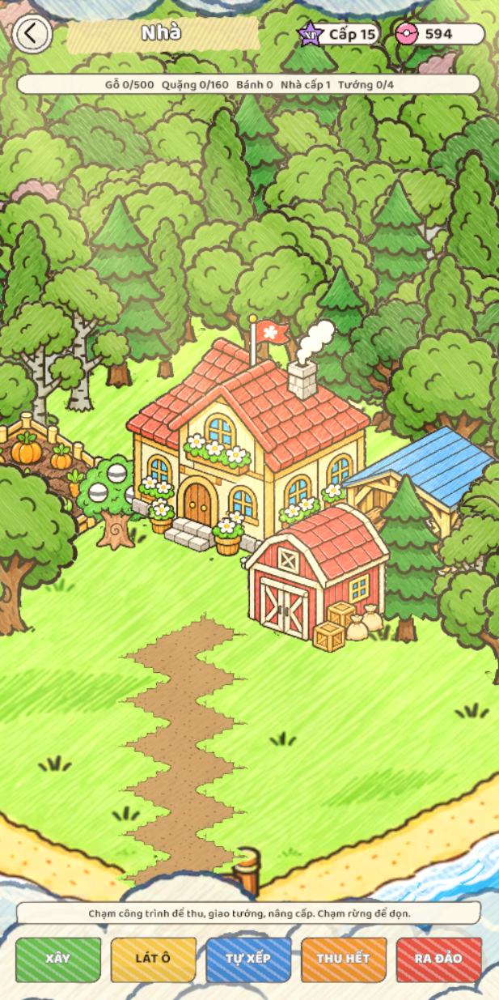
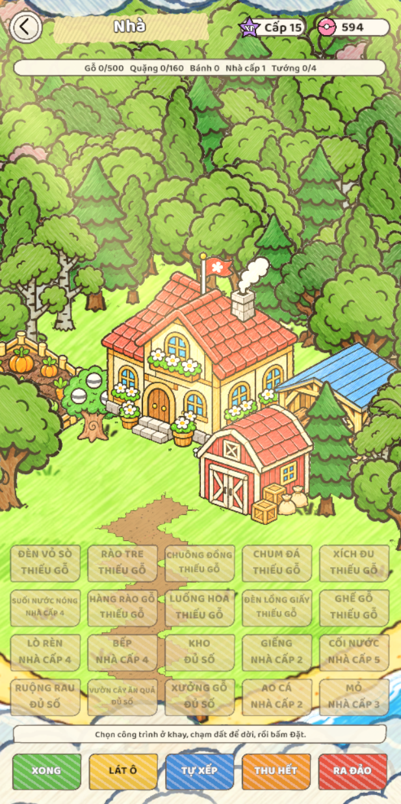
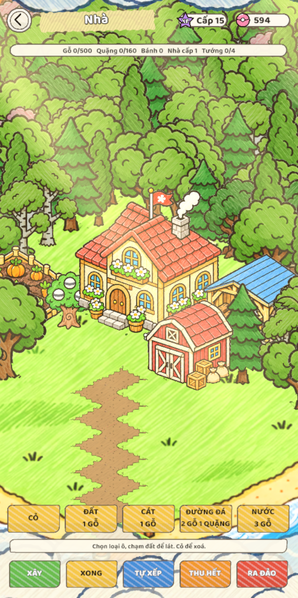

Ảnh chụp từ tour tự động (Play). Bản lưu thử: cấp 15, mới mở Nhà. Sáng tối dùng chung hệ của các đảo (theo giờ máy, lúc chụp là ban ngày).

Thường: Nhà chính, ruộng, cây bi, xưởng gỗ, kho; đường đất từ bến lên nhà; rừng phủ ô chưa mở; mây che rìa; hàng nút Xây, Lát ô, Tự xếp, Thu hết, Ra đảo.

Chế độ xây: khay công trình và trang trí, món khoá ghi lý do (Nhà cấp mấy, thiếu gỗ, đủ số).

Chế độ lát ô: cỏ (xoá), đất, cát, đường đá, nước. Ô lát còn tô màu phẳng, chưa có môi cỏ ở mép.